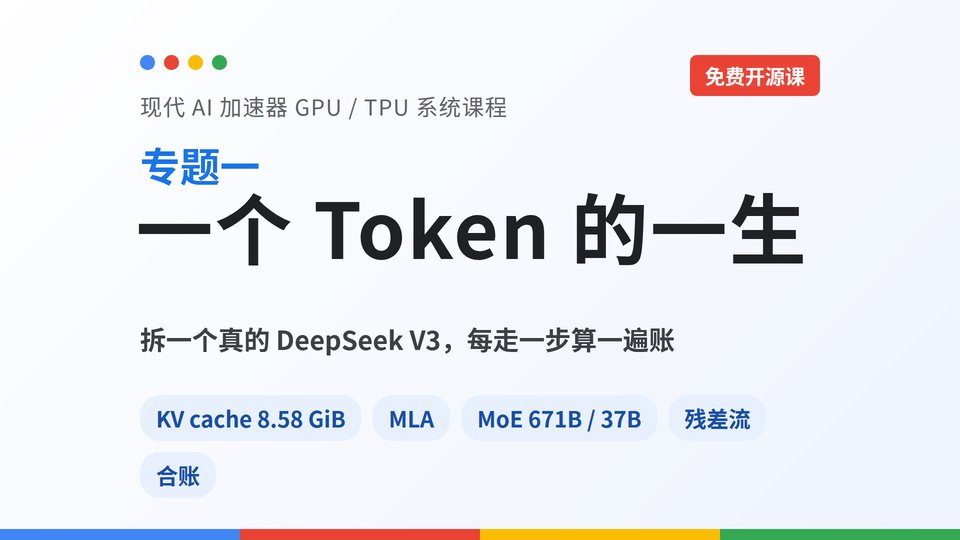
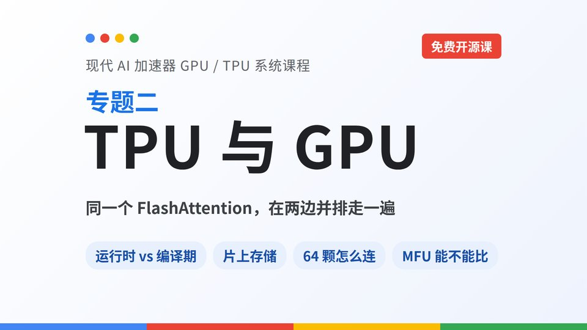

一个 Token 的一生
拆一个真的 DeepSeek V3：跟着一个 token 走完全程，每一步都算账——KV cache、MLA、MoE、残差流，最后对上官方口径。
大模型长成今天这个样子，是被芯片逼出来的；芯片长成今天这个样子，也是被大模型逼出来的。
以 DeepSeek V3 为线索，不背结论，每一步都算给你看。每讲 1.5–2 小时，4K 画面、中文字幕，课件和讲义全部免费开源。

拆一个真的 DeepSeek V3：跟着一个 token 走完全程，每一步都算账——KV cache、MLA、MoE、残差流，最后对上官方口径。
